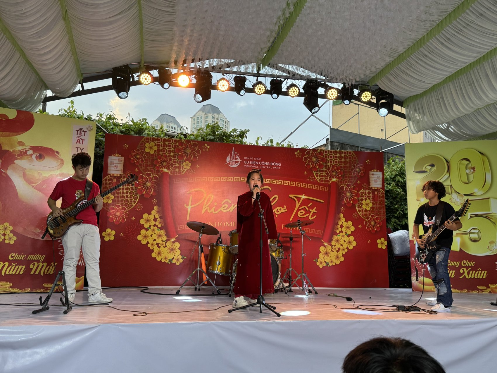

Lunar New Year 2025 · Community spring festival
Phiên Chợ Tết — Lunar New Year Community Festival
At this Lunar New Year (Tết) spring festival in the Vinhomes Central Park residential community, I played bass guitar for “Cung đàn mùa xuân” alongside a vocalist, guitarist, and drummer. Playing in a band is an exercise in listening, timing, and making space for one another.
Venue: Vinhomes Central Park, Ho Chi Minh City. Song: “Cung đàn mùa xuân” · Bass guitar: Khoi Tran. Exact performance date to be confirmed.
Photo journal
Scenes from the stage
Scroll through the photographs and select an image to view it full-size.
Five selected images · Phiên Chợ Tết · 2025
Live recording
Watch the performance
45-second excerpt from the family recording. The full performance is retained separately and can be linked later.